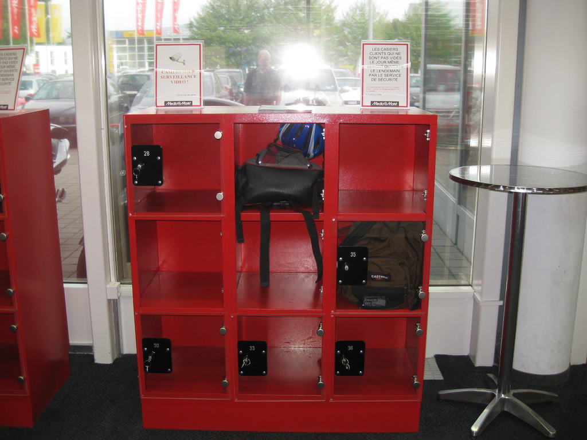
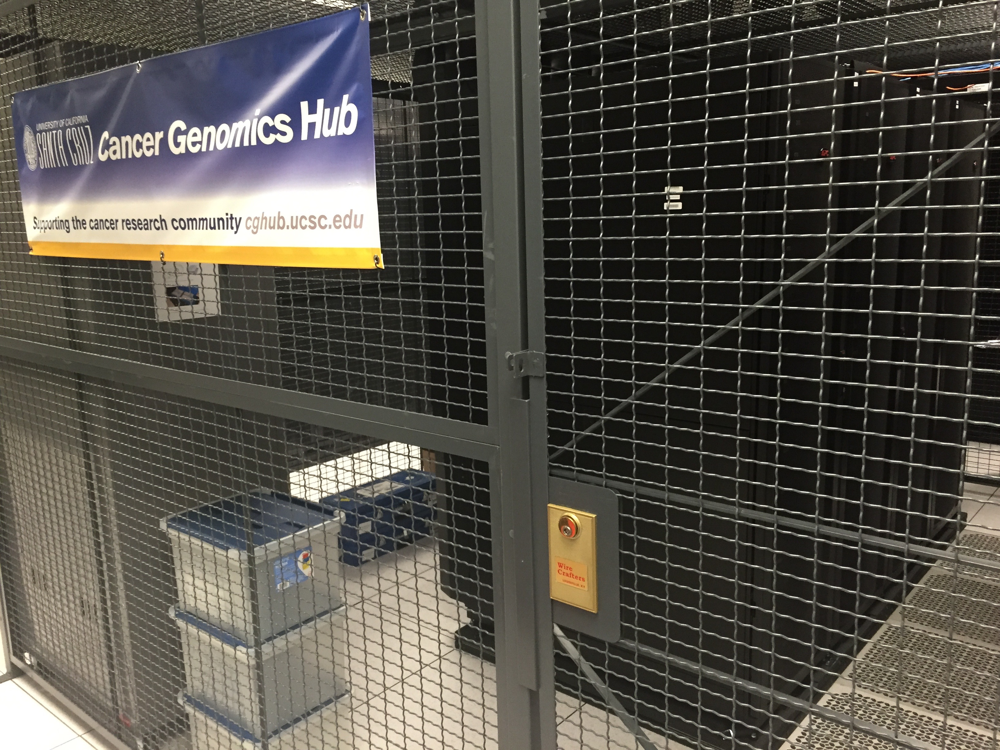

Tools (some of which you are probably already using)
Resources
Principles
Confidentiality - the information requires protection from unauthorized disclosure.
Integrity - The information must be protected from unauthorized, unanticipated, or unintentional modification.
Availability - The information technology resource (system or data) must be available on a timely basis to meet mission requirements or to avoid substantial losses. Availability also includes ensuring that resources are used only for intended purposes.
-Swanson, M., & National Institute of Standards and Technology (U.S.). (2001). Security self-assessment guide for information technology systems (NIST special publication ; Computer security, 800-26; NIST special publication, 800-26; NIST special publication, Computer security.3223114). Gaithersburg, MD: U.S. Dept. of Commerce, Technology Administration, National Institute of Standards and Technology. http://books.google.com/books?id=-AVRAAAAMAAJ
What Data?
Bottom line - you should think about these principles for all of your data.
The question you must ask:
What are the consequences of failure?
Parts of the System
Storage systems: local, backup, cloud
Access control (physical and digital)
Transmission
Encryption
Storage
Local options: internal hard drive, external hard drive, local server
Backup options: local copies moved off site, network copies transfered to remote locations. Verified
Cloud: not generally a primary backup solution - sync capabilities rapidly propagate corruption and deletion
Dark archival storage: storage of copies of data in a secure system designed to provide for integrity and preservation - but not sharing

Access Control
Physical Access (physical security controls)
Electronic Access (network access controls)

Transmission
Always assume that your network traffic is being monitored/intercepted
Secure transmission is increasingly important
Email is a transmission method you must also consider from a security standpoint
Encryption
Mathematical algorithms used to encode content so that only the keyholder can read it
Without the key it is computationally difficult to break strong Encryption
Can be applied to individual files, entire drives, and packets of information transferred over the network
Strong Passwords
Two-factor Authentication - what you have and what you know
Access control by user or group (Access Control Lists)
Who has the keys?
Tools you Already Use
Windows and Mac Computers have encryption support build into the core operating system
Outlook and OS X Mail (and many other email clients) can support sending and receiving encrypted messages
All of the major cloud data storage providers provide some level of encryption, both at rest and in motion: DropBox, OneDrive for Business, Google Drive, Amazon S3, LoboDrive (OwnCloud) - They have the keys - you have your password
All browsers support secure transmission using HTTPS, the secure transfer protocol of the web
There is broad support for secure alternatives for FTP - SFTP, SSH, HTTPS
Strong passwords can help protect your data. There are tools for managing your passwords so you can use strong passwords everywhere
Swanson, M., & National Institute of Standards and Technology (U.S.). (2001). Security self-assessment guide for information technology systems (NIST special publication ; Computer security, 800-26; NIST special publication, 800-26; NIST special publication, Computer security.3223114). Gaithersburg, MD: U.S. Dept. of Commerce, Technology Administration, National Institute of Standards and Technology. http://books.google.com/books?id=-AVRAAAAMAAJ